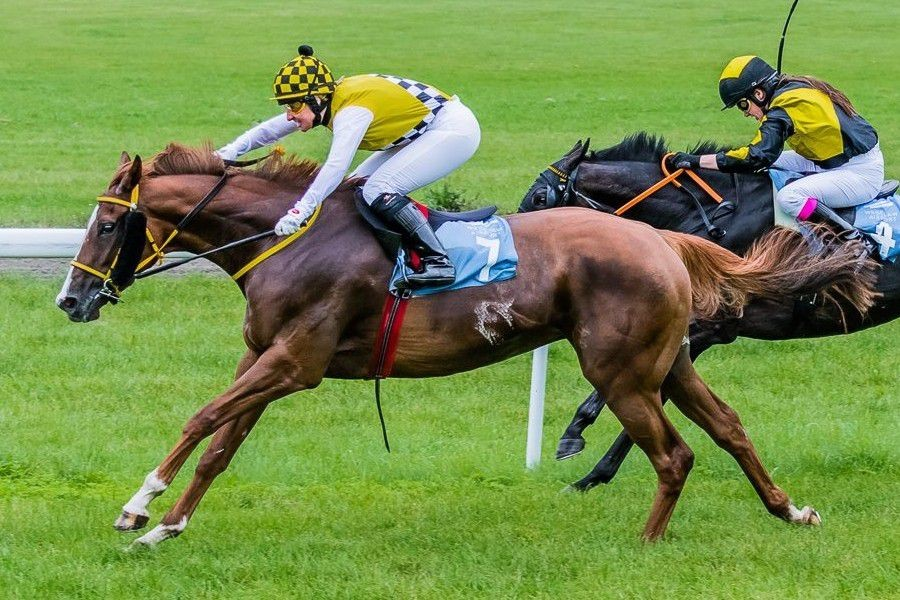

Key To Life
(Country Club - Karuzela/Tagula)
Klacz rasy Koń Pełnej Krwi Angielskiej, urodzona 18 stycznia 2014 roku.
Wyhodowana przez Expert Host - Janusz Romanowski.
W czasie 3-letniej kariery wyścigowej biegała i wygrywała na polskich torach w Warszawie i we Wrocławiu. Poza wyścigami płaskimi, brała również udział w wyścigach płotowych.
